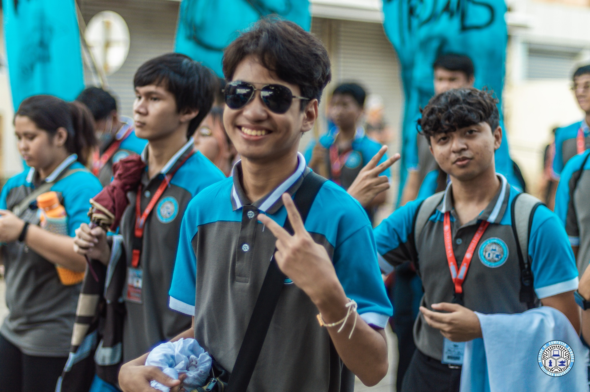
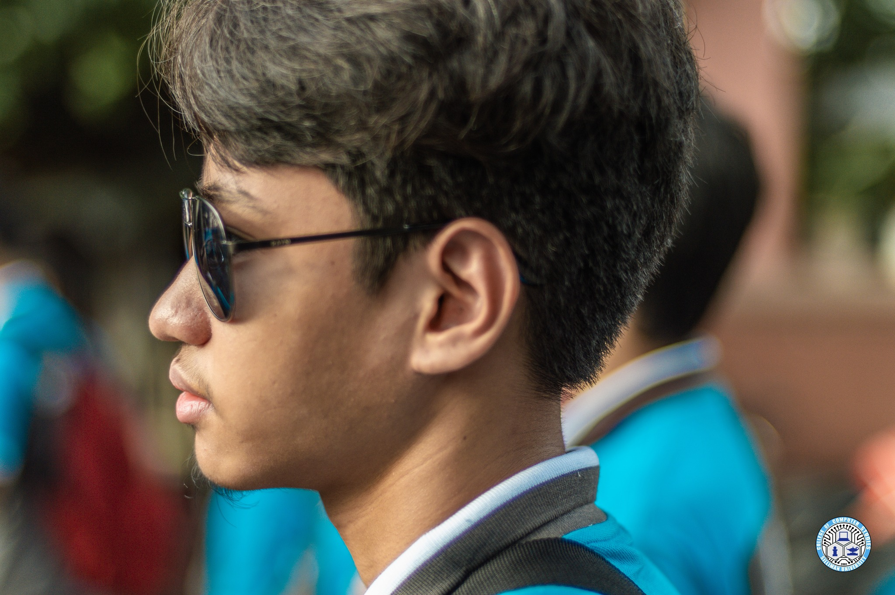
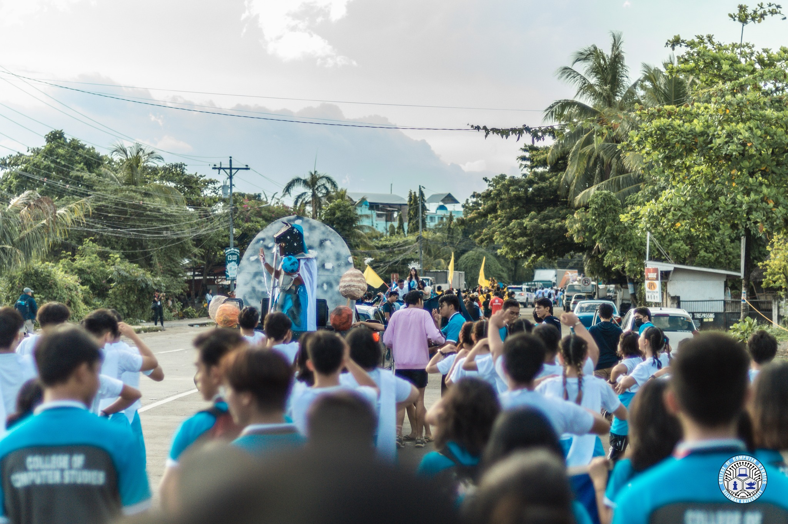
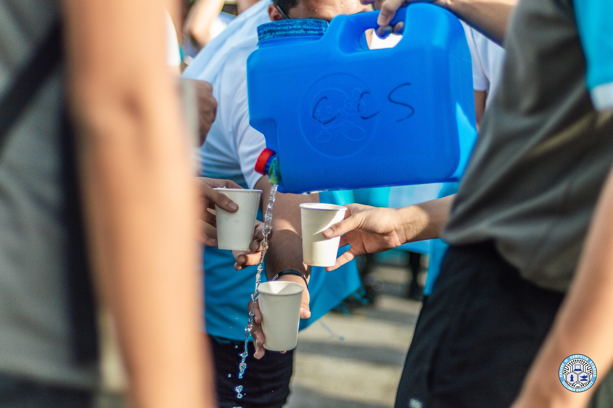
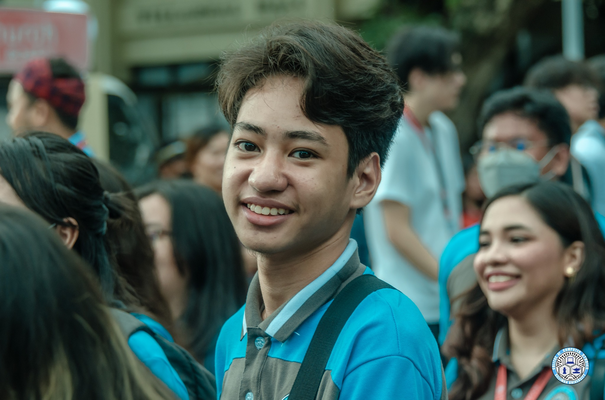

Activity Name:
PARADA SILLIMANIANA
Category:
Culture
Organizer:
SUSG COMMITTEE ON STUDENT ORGANIZATIONS
Date of Event:
The SU Experience of Ernest Rojo
Activity Name:
Category:
Organizer:
Date of Event:
Following the meticulous preparation, the culmination arrived with the eagerly anticipated Parada Sillimaniana, an annual event orchestrated by Silliman University. The parade, a collective effort involving all colleges within the university, wound its way around Dumaguete City, commencing at Katipunan Gate, traversing downtown, and concluding at Cimafranca Ballfield. This festive and vibrant event showcased the unity and spirit of the university community.
Participating in Freshie Walk provided an opportunity to witness the sheer number of freshmans across the entire university, exceeding expectations. The event served as a platform to meet new people, establishing connections that would evolve into lasting friendships. The surprise element was the sense of community that extended beyond the boundaries of my college. The experience impacted my view of college life positively, offering a warm and inclusive initiation.
Participating in Parada Sillimaniana was an immensely enjoyable experience. Walking alongside fellow CCS students, engaging in great conversations, and witnessing the lively dance performances at the forefront created a sense of camaraderie and pride. The dedication and enthusiasm displayed by students throughout the parade profoundly inspired me, underscoring the importance of college spirit and pride in contributing to a rich and fulfilling college experience.
Because of the exhilarating experience at Parada Sillimaniana, I am motivated to cultivate a strong sense of dedication and pride in my college and university community. The parade has inspired me to actively participate in events that contribute to the vibrant spirit of Silliman University, fostering connections and a positive college experience. The unity and pride displayed during the parade have become a source of inspiration, shaping my commitment to being an integral part of the dynamic university community.
Note: Photos may be blurry or unclear prior to October 9, 2023 due to hardware issues




